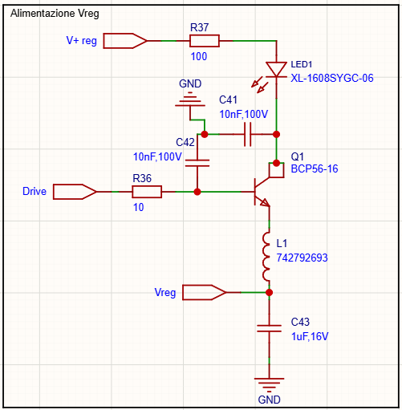

BMS Vittoria 2026/2027
Fabrizio Palma - 03/11/2026 Nominativo progetto - Vittoria
Obiettivo del progetto
In questi anni di E racing Bergamo, abbiamo adottato dei BMS già prodotti, i Tiny AFE v1.1 di ENEPAQ. Durante i test pre-gara svolti nell'estate 2026, abbiamo notato una grande sofferenza ai disturbi emessi dall'inverter, in fase di alimentazione dei motori. In particolare, non riuscivamo a leggere i dati dei BMS quando la macchina è in funzione. Dopo tentativi di migliorare la schermatura, utilizzo di ferriti, non siamo riusciti a risolvere il problema.
L'obiettivo postoci per la stagione 2026/2027 è quella di trovare una soluzione a questo problema, anche cambiando tecnologia dei BMS. Dopo esserci consultati anche con altri team di Formula student, abbiamo notato che l'utilizzo di un componente di Analog Device con comunicazione isoSPI ha risolto il problema. Dopo aver consultato datasheet di vari componenti della stessa famiglia di ADI, abbiamo deciso di adottare l'ADBMS6815.
Informazioni principali
L'ADBMS6815 è un componente che permette 1. monitoraggio di 12 celle 2. Comunicazione isoSPI a bassa suscettibilità ai disturbi EMI 3. bilanciamento interno passivo delle celle fino a 300mA (possibilità di aggiungere un circuito esterno per bilanciamento oltre i 300mA) con PWM programmabile 4. 7GPIO o input analogici (utilizzati per misurare le temperature sulle celle) 5. Sleep state che consuma 5uA
Tra le applicazioni in cui viene utilizzato, quella che interessa a noi è "Electric and hybrid electric vehicles".
L'idea per la nostra applicazione è quella di misurare 10 celle, seguendo la configurazione dei moduli attuali, con una tensione massima di 42V (4,2Vx10) e 5 sensori di temperatura (da regolamento bisogna misurare almeno il 30% delle temperature delle celle. Con 5 siamo al 50%, e usiamo due GPIO in meno di quelli disponibili, scelta che verrà motivata successivamente)
Altre features utili:
1. È possibile collegare in serie più dispositivi ADBMS6815, consentendo il monitoraggio simultaneo delle celle in lunghe stringhe di batterie ad alta tensione
2. Più dispositivi vengono collegati in una configurazione a cascata (daisy chain) con una singola connessione al processore host
3. La comunicazione può avvenire in entrambe le direzioni, garantendo l'integrità dei dati anche in caso di guasto lungo il percorso di comunicazione.
 (schema generale)
(schema generale)
Il componente
 I pin:
1) V+ è il pin a cui si collega il positivo della serie di celle (dove avremo al max 42V)
I pin:
1) V+ è il pin a cui si collega il positivo della serie di celle (dove avremo al max 42V)
2) Tutti i pin Cx sono i pin a cui si collega il positivo delle celle, in mezzo c'è il circuito di filtro
3) Tutti i pin Sx sono i pin a cui si collega la resistenza di scarica per il bilanciamento delle celle, al suo interno c'è un mosfet che collega il pin \(S_X\) e \(S_{x-1}\) per la scarica delle celle
4) I GPIO(1-7) possono essere usati come input analogici/digitali dove collegheremo i sensori di temperatura
5) V- sono due pin dove si collega il negativo di tutta la serie di celle, fa da GND
6) Drive è il pin che fornisce 5.7V per pilotare un transistor che regoli la tensione per alimentare la Vreg
7) ISOMD è un digital input. Mandandolo alto configuriamo il BMS per la comunicazione isoSPI (2 cavi), mandandolo basso invece lo configura per la comunicazione SPI (4 cavi)
8) \(V_{REF1}\) e \(V_{REF2}\) forniscono una tensione di riferimento. Entrambi hanno bisogno del condensatore di bypass. Solo la \(V_{REF2}\) possiamo usarla per fornire tensione di riferimento ai sensori di temperatura
9) ISOTHR
Alimentazione del componente
Il pin primario per fornire alimentazione al componente è il Vreg (input pin a 5V).
| min | typ | max | ||
|---|---|---|---|---|
| Vreg | 4.5 | 5 | 5.5 | V |
| Il datasheet dice che ci sono 2/3 modi di fornire alimentazione al pin Vreg: | ||||
| 1) Simple linear regulator : con un tansistor BJT NPN si sfrutta l'uscita del pin DRIVE per generare i 5V sul collettore a cui si collega il pin di Vreg | ||||
| 2) External regulator for Improved efficiency : utilizzare un regolatore esterno per aumentare l'efficienza, utilizzando un regolatore step down |
La nostra scelta è ricaduta su un semplice regolatore lineare, per non aumentare rischi di errori e analizzando le foto dei test termici condivisi da Analog, si nota che non c'è una dissipazione critica.
Il regolatore lineare discreto con un transistor NPN in configurazione emitter follower (collettore comune) è pilotato sulla base dal pin Drive che fornisce:
| min | typ | max | ||
|---|---|---|---|---|
| Drive | 5.6 | 5.7 | 5.8 | V |
| -0.2 | 1 | mA | ||
| Il nostro circuito: | ||||
 |
||||
| Seguendo il circuito suggerito dal datasheet: | ||||
| 1) R36 è una resistenza di disaccoppiamento delle RF | ||||
| \(P_{R_{36}}=I^2R_{36}=0.03^2⋅100=0.09W\) (scelta una 0603 1/10W) | ||||
| 2) R37 è una resistenza che protegge il Q1 da rumore e ESD (ElectroStatic Discharge). Si collega direttamente al positivo della serie di celle | ||||
| 3) Il pin Drive fornisce 5.7V, quindi per la configurazione del BJT abbiamo: | ||||
| \(V_{out}=V_{DRIVE}-V_{be}=5.7V-0.7V=5V\) che è la tensione all'uscita del transistor (tra emettitore e GND) | ||||
| 4) Il BJT scelto è un BCP56-16 che supporta 80V 1A con \(h_{fe}=100\) tipica | ||||
| 5) C42 e C41 sono condensatori di disaccoppiamento delle RF in ingresso (valori suggeriti da datasheet) |
Il datasheet suggerisce di aggiungere anche un L1 che è una ferrite bead. Il BMS misura tensioni molto piccole e i distrubi sono un problema. I rumori che possono finire sulla Vreg possono provenire da: - isoSPI, - ADC interni, - commutazioni digitali, - cavi lunghi,
L'utilità della ferrite bead è di mantenere: - VREG più pulita; - minore rumore sull'ADC; - migliore precisione di misura;
La ferrite insieme al condensatore da C43=1 µF crea un filtro passa-basso.
| A bassa frequenza (corrente continua): | Ad alta frequenza: |
|---|---|
| - la bead ha una resistenza piccolissima; - il circuito riceve quasi tutti i 5 V. |
- la bead presenta un'impedenza elevata; - i disturbi provenienti dal transistor o dall'esterno vengono attenuati; - il condensatore da 1 µF li scarica a massa; |
| Quindi alla fine la progettazione di questa parte di circuito viene guidata dal datasheet del componente. |
Filtraggio e bilanciamento di carica
 Tranne per il pin C0, che si collega al V- della serie di celle, tutti i pin Cx misurano la tensione sulla cella. In mezzo c'è un filtro passa basso RC prima che filtra i rumori prima del pin collegato all'ADC interno. I valori di resistenza (\(470\Omega\)) e del condensatore (\(2200nF\)) sono consigliati dal datasheet, che suggerisce di tenere valori \(\le470\Omega\) e \(\ge2200nF\) per minimizzare l'errore di misura.
La resistenza da \(200\Omega\) è la resistenza che protegge il componente dai picchi di tensione.
Tra ogni pin Sx si mette un condensatore da \(220nF\) \(16V\) per filtrare i rumori tra i pin Sx.
La resistenza da \(15\Omega\) è la resistenza di scarica per il bilanciamento delle celle e si collega al pin Sx. Tale resistenza è calcolata affinché sia all'interno del valore massimo di 300mA sostenibili dal componente, e si calcola come:
$\(R_{scarica}=\frac{\frac{V_{cell}} {I_{scarica}}-R_{ds,on}} {2}\)$
dove:
- \(R_{ds,on}\) è la resistenza del mosfet interno del componente (\(3\Omega\))
- \(V_{cell}\) è la tensione delle celle
- \(I_{cell}\) è la corrente di scarica (per ora 132mA, come evaluation board)
Tranne per il pin C0, che si collega al V- della serie di celle, tutti i pin Cx misurano la tensione sulla cella. In mezzo c'è un filtro passa basso RC prima che filtra i rumori prima del pin collegato all'ADC interno. I valori di resistenza (\(470\Omega\)) e del condensatore (\(2200nF\)) sono consigliati dal datasheet, che suggerisce di tenere valori \(\le470\Omega\) e \(\ge2200nF\) per minimizzare l'errore di misura.
La resistenza da \(200\Omega\) è la resistenza che protegge il componente dai picchi di tensione.
Tra ogni pin Sx si mette un condensatore da \(220nF\) \(16V\) per filtrare i rumori tra i pin Sx.
La resistenza da \(15\Omega\) è la resistenza di scarica per il bilanciamento delle celle e si collega al pin Sx. Tale resistenza è calcolata affinché sia all'interno del valore massimo di 300mA sostenibili dal componente, e si calcola come:
$\(R_{scarica}=\frac{\frac{V_{cell}} {I_{scarica}}-R_{ds,on}} {2}\)$
dove:
- \(R_{ds,on}\) è la resistenza del mosfet interno del componente (\(3\Omega\))
- \(V_{cell}\) è la tensione delle celle
- \(I_{cell}\) è la corrente di scarica (per ora 132mA, come evaluation board)